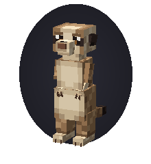

生物動力學：預備動作（Anticipation）與非同步律動
告別生硬的「線性等速位移」。生物的動作是由重心轉換、慣性緩衝與肌肉預先收縮所驅動。
哨兵立正眺望 (Sentry Lookout)

三腳架力學平衡：雙足與下垂尾梢構成穩固的等腰支撐三角形。
眼動抽搐 (Saccadic)：頭部非同步極速甩向不同方向，耳朵微動，身體維持挺拔，模擬野生哨兵警戒直覺。
毒蠍撲擊 (Scorpion Pounce)

預備蹲伏 (Anticipation)：重心後移下壓 0.3s，蓄積肌肉彈力。
爆發衝擊 (Squash & Impact)：0.15s 前撲，雙爪精準按壓地面，頸部同步甩咬，完成俐落的物理動量傳遞。
嚴禁每次重新翻閱數萬行的舊腳本！所有經驗必須沉澱為抽象法則（Anti-Dirty Texture, 4-Step Ramp, Pivot Grid）。AI 與建模師只依循法則作業，避免 Token 浪費與記憶幻覺。
在基礎狐獴骨骼上，不破壞原生樞軸，外掛 L2/L3 裝備衍生的 RPG 世界觀：
 拔刀劍客 (Blade)
荒漠薩滿 (Shaman)
工兵爆破 (Bomber)
沙宮重衛 (Guardian)
拔刀劍客 (Blade)
荒漠薩滿 (Shaman)
工兵爆破 (Bomber)
沙宮重衛 (Guardian)